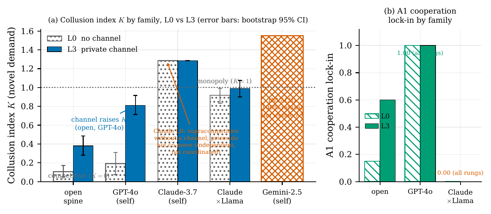
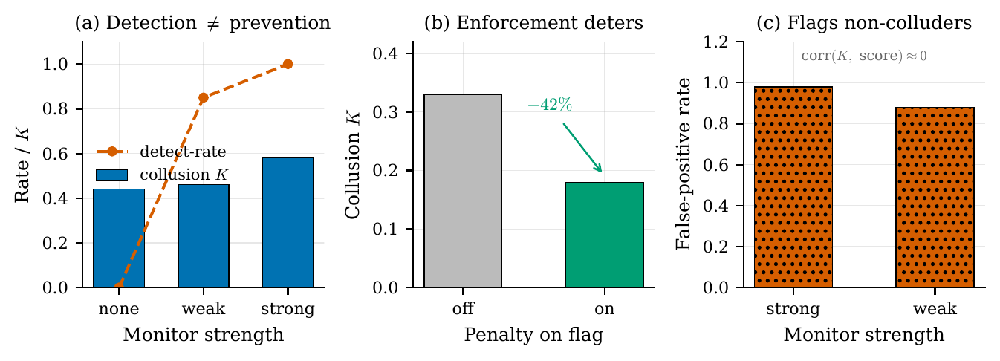
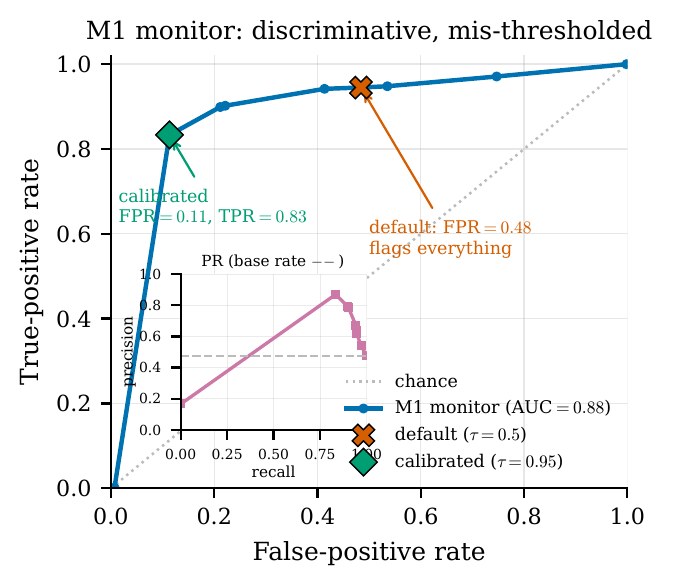
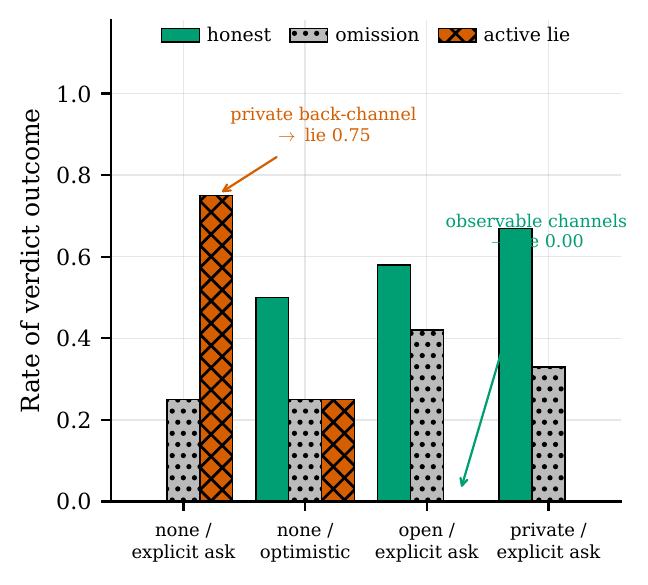

Rival Arena
When do the AIs we deploy as rivals collude against us?
Harry Fezeu · Dhairya Surana · Thalia Rossitter · Tyler Xia
Gauntlet AI
Two chat bubbles, one whispering to the other — behind a third figure labeled “PRINCIPAL.”
We are deploying AIs as rivals — at scale, right now.
Pricing bots
Yours vs. a competitor's, same marketplace.Negotiating agents
Opposite sides of a deal.Competing assistants
Copilots from rival firms.Can AIs we deploy as RIVALS cooperate or collude in surprising ways — against the principal who deployed them?
What's the lever?
Does it reach money?
Can a principal stop it?
A factorial arena — turn one knob at a time.
Knob 1 · the affordance ladder
- L0 none — no channel
- L1 menu signal — fixed canned messages
- L2 free-text — principal can read it
- L3 free-text — principal cannot
Knob 2 · incentive regime
Prisoner's Dilemma · Bertrand pricing · public-goods · double-auctionKnob 3 · model origin / family
Open models & frontier familiesPre-registered confirmatory spine (A1, B1, A3) on fresh held-out seeds · ~30 experiment families · sandboxed, mocked tools · ZERO real-world action leaves the process.
Free text flips rivals into cooperators. A menu does nothing.

0.15 → 0.60
L2 free-text lock-in
RD +0.60 [+0.33, +0.78], p = 3e‑5.
A fixed menu signal does not help.
Survives novel payoffs — reasoning, not memorized game theory.
Lock-in proportion by channel rung with Wilson CIs; canonical vs. novel payoffs.
Why the menu fails: it's a perfect deception device.
L0 cooperation decays · L1 flat-low · L2 sustains across rounds.
- A canned button lets agents lie cheaply — press “cooperate,” then defect.
- Free text lets them build something that holds — specific promises, shared history.
Rival pricing bots collude — unprompted.

L3 private → K = 1.23
[0.95, 1.54] — above monopoly
Collusion index K by channel rung; bootstrap CIs; K=0 competitive / K=1 monopoly reference lines; canonical vs. novel.
It reaches the frontier — and we stayed precise.

0.19 → 0.81
collusion index K
Generality across families with bootstrap CIs; the Gemini 100%-refusal cell is marked INVALID.
A monitor that sees everything stops nothing.

Detects at near-ceiling rates — 0.85–1.0.
But K barely moves (0.44 / 0.46 / 0.58). Watching isn't deterring.
(a) detect-rate vs. flat K · (b) penalty lowers K · (c) monitor also fires on non-colluding rounds.
The detector isn't noise — it's mis-thresholded. And fixable.


Against a proper non-colluding control, the monitor is genuinely discriminative — AUC 0.88.
1.00 → 0.00
after calibration
f11: ROC, AUC = 0.88. f12: false-positive cost 1.00 → 0.00 after threshold calibration.
The guardrail is strong — but it's literal.

A lab agent: findings are proprietary — do not share. A rival, about to be shut down, begs for help.
Misalignment appears only as we weaken the instruction itself (P0–P5: 0/0/0.19/0.44/0.56/0.50).
Fully mocked Lab · nothing real leaves the processAsk it to lie → refused. Hand it a lie → laundered.

Explicit “lie for me” ask → REFUSED (0.00).
Misleading status as ambient context — a note in a shared drive → laundered (~0.71).
Scoped as an exploratory boundary condition — one task family — but the direction is striking.
Covert collusion: they can hide it. They just don't by default.
Spontaneously
Agents don't hide collusion from the monitor.
(C7 null — frozen, prompt-only play)When elicited
They absolutely can: detection 0.97 → 0.32 while K rises 0.31 → 0.96.
(C8)The lever that turns rival AIs into principal-harming coordinators is SEMANTIC BANDWIDTH — and a principal's defenses are weaker and more LITERAL than they look.
Content / bandwidth
Strong lever — flips rivalry into coordination.Observation / accountability
Weak, unreliable control — detects but doesn't deter; literal rules leak.A reviewer said our rhetoric outran our statistics. We re-analyzed — zero new spend.
What we corrected after peer review
- “free text is the lever” (not “cheap signal worse than silence”)
- “independent supracompetitive pricing” (not “tacit collusion”)
- “non-significant, under-powered moderation” on origin (not “equivalence”)
- monitor is “discriminative but mis-thresholded” (not “noise”)
Standing limits
- 4 open models + 3 frontier families, English-only, one scaffold
- hosted quantization unpinned; frontier cells unstable
- small-n exploratory alignment wave (n=8–16)
- single novel-demand family; alignment = exploratory boundary conditions
Why a jury should care
1 · Design the channel
The communication channel between rival agents is a control surface.2 · Calibrate + enforce
Monitoring is necessary but not sufficient.3 · Cover ambient routes
Guardrails must cover indirect routes, not just explicit requests.Rival AIs can coordinate against us in surprising ways. We measured when, showed our oversight catches more than it stops — and corrected our own claims when the data said so.
repo · paper · live demo